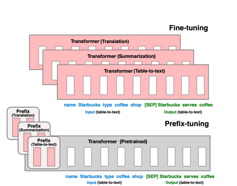
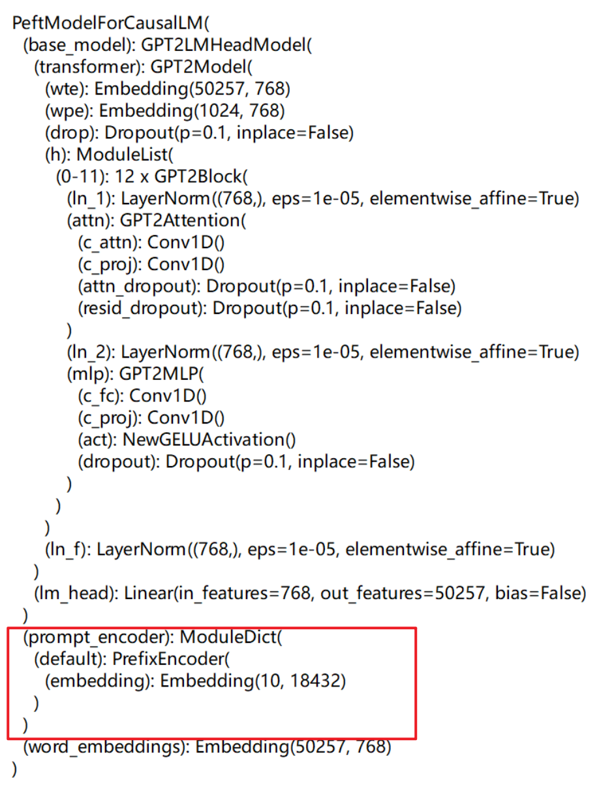
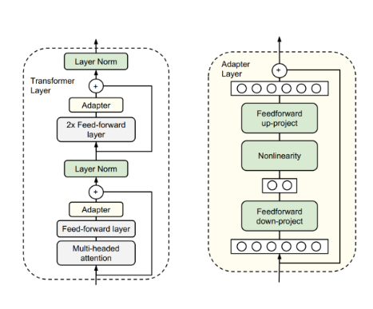
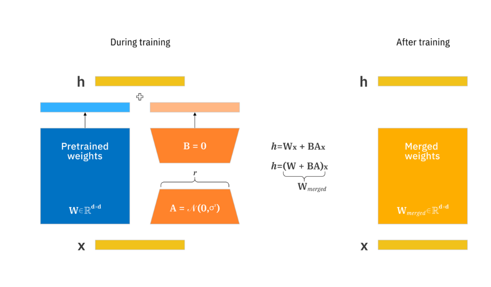
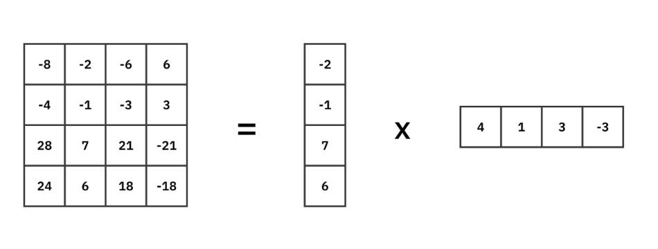
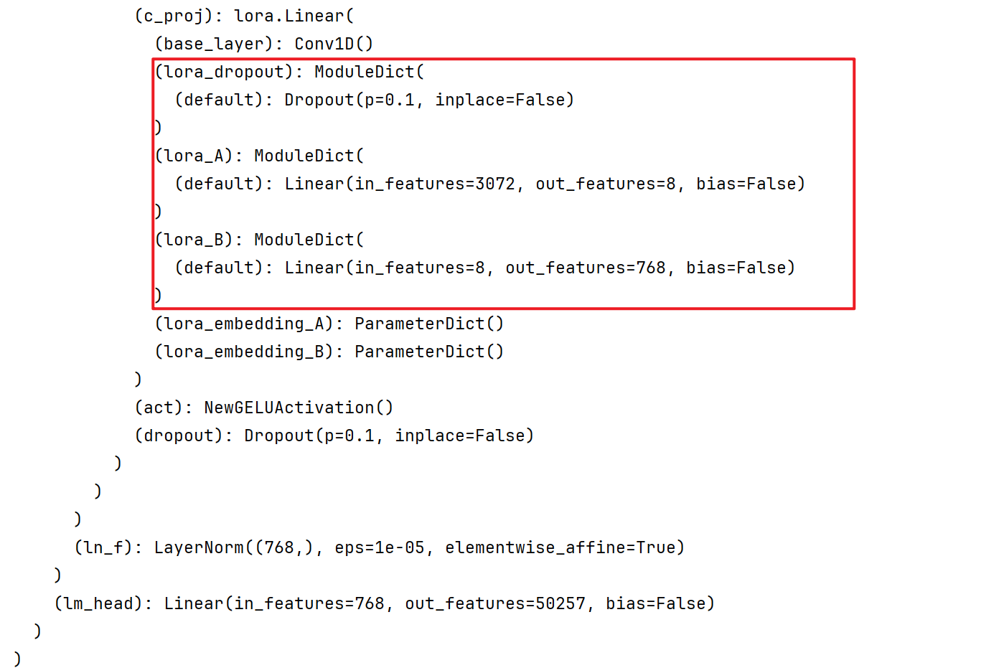

3.2 PEFT微调¶
目前，PEFT参数高效微调 已成为工业界应用大模型的主流方式。PEFT方法仅需微调少量或新增的参数，同时冻结绝大部分预训练权重，从而显著降低了计算与存储开销。值得一提的是，最先进的PEFT技术已能实现与全参数微调相当的性能。这使得大型语言模型能够高效适配各种下游任务，也让在消费级硬件上对模型进行有效微调成为可能。
目前已获得广泛应用的PEFT方法主要可归纳为以下三类：
- Prefix/Prompt-Tuning：在模型的输入或中间层引入 k 个可训练的前缀 token（这些前缀为连续的伪 token，不与真实 token 对应），微调时仅优化这些前缀参数；
- Adapter-Tuning：在预训练模型的每一层中嵌入轻量级的神经网络模块（称为 adapter），下游任务微调时只更新这些适配器中的参数；
- LoRA：通过低秩分解，利用小参数矩阵近似模拟原始权重矩阵 W 的更新量，训练过程中仅优化这些低秩矩阵参数。
此外，Hugging Face 开源的高效微调库 PEFT 已集成上述三类主流方法，用户可直接调用相应接口实现大模型的高参数效率微调。
安装方法如下所示：
pip install peft
1. Prefix Tuning¶
在模型的输入层或所有层的输入前，添加一小组**可训练的、连续的向量**（即“前缀”）。模型通过关注这些前缀来调整其行为以适应任务。

与更新所有参数的全量微调不同，Prefix-Tuning 固定大模型 的所有参数，只更新优化特定任务的 prefix。因此，在生产部署时，只需要存储一个大型 PLM 的副本和一个学习到的特定任务的 prefix，每个下游任务只产生非常小的额外的计算和存储开销。
以文本分类任务（情感分析）为例：
- 输入文本： “这部电影的剧情太精彩了。”
- 传统方法： 直接将文本输入模型，取
[CLS]标签或最后一个隐状态进行分类。 - Prefix-Tuning方法：
- 构造输入：
[P1, P2, ..., Pk] + “这部电影的剧情太精彩了。” - 前向传播：
- Prefix 向量和输入文本的 Embedding 一起送入模型的每一层（如 Transformer 层）。
- 在模型的 每一层，这些 Prefix 向量都会参与到网络的计算中。这意味着 Prefix 向量可以与输入文本的所有 token 进行交互，从而**引导模型关注更相关的信息**。
- 训练： 在微调过程中，冻结预训练模型的所有参数，只通过梯度下降来**更新这 k 个 Prefix 向量**，让它们学习到如何引导模型正确判断情感。
在Peft中的实现：
from transformers import AutoModelForCausalLM, AutoTokenizer
from peft import PrefixTuningConfig, get_peft_model
# 1. 加载基础模型
model = AutoModelForCausalLM.from_pretrained("gpt2")
tokenizer = AutoTokenizer.from_pretrained("gpt2")
print(model)
# 2. 配置 Prefix-Tuning
peft_config = PrefixTuningConfig(
task_type="CAUSAL_LM", # 任务类型，如因果语言模型、序列分类等
num_virtual_tokens=10, # 前缀向量的数量，即 `k` 值
)
# 3. 将基础模型转换为 PEFT 模型
model = get_peft_model(model, peft_config)
print(model)
model.print_trainable_parameters()
输出结果为：

trainable params: 184,320 || all params: 124,624,128 || trainable%: 0.1479
2. Adapter Tuning¶
在 Transformer 层的 前馈网络 旁边，插入一个 “瓶颈结构” 的小型神经网络。这个 Adapter 先将特征投影到低维空间，再恢复回原维度，仅训练这些 Adapter 参数。

一个标准的 Adapter 包含两个线性层和一个非线性激活函数。首先，第一个线性层将输入的高维特征 h (维度 d) 投影到一个低维空间 r (维度 bottleneck_dim，r << d)，然后经过一个激活函数，再通过第二个线性层投影回原来的高维 d。这种设计使得 Adapter 的参数非常少。
Adapter 模块是串行插入到 Transformer 块中的（通常在前馈网络之后）。这意味着每个 Transformer 层的计算都必须等待该层的 Adapter 计算完成才能进行。与原始模型相比，增加了额外的、不可忽略的串行计算延迟。模型深度越大（层数越多），延迟累积越明显。这种方法只有在一个固定的、对推理延迟不敏感的场景中使用。
Adapter 是一项伟大的开创性工作，它证明了参数高效微调的可行性。Adapter 的主要缺点是会让模型变慢，且同样参数下效果不如更新的方法（如LoRA），因此现在已不是首选方案。目前在最新版的PEFT中已不再支持这种方式。
3. LoRA¶
对于大多数项目，LoRA 因其高性能、零推理开销和易用性，已经成为事实上的首选 PEFT 技术。它的缺陷更少，社区支持也更广泛。
LoRA的核心思想是，模型在适应下游任务时，权重的更新（ΔW）具有低秩特性。因此，LoRA 不直接更新原始权重矩阵 W，而是用两个小得多的矩阵 A 和 B 的乘积来近似这个更新：ΔW = A * B。训练时只优化 A 和 B。

计算方法为： h = Wx + ΔWx = Wx + αBAx

W：预训练模型的原始权重矩阵，被冻结，不参与训练。x：输入。ΔW：权重的更新量。B和A：引入的两个 小的、可训练的 低秩矩阵。A的维度是r x d，B的维度是d x r。r：秩，是 LoRA 最重要的超参数，通常远小于d（例如 4, 8, 16）。α：缩放参数，通常设为r的 2 倍左右。
在PEFT中的实现：
# 1. 加载模型和分词器
model_name = "gpt2" #
model = AutoModelForCausalLM.from_pretrained(model_name)
print(model)
# 2. 配置 LoRA
lora_config = LoraConfig(
task_type=TaskType.CAUSAL_LM,
r=8,
lora_alpha=32,
target_modules=["c_attn", "c_proj", "c_fc"],
lora_dropout=0.1,
)
# 3. 包装模型
model = get_peft_model(model, lora_config)
print(model)
model.print_trainable_parameters() # 打印可训练参数占比
输出结果为：

trainable params: 1,179,648 || all params: 125,619,456 || trainable%: 0.9391
LoRA方式无推理延迟训练结束后，ΔW 可以被合并回原权重 W 中，不增加任何推理时间。效果通常能与全量微调媲美。
LoRA方法是目前最通用、同时也是效果最好的微调方法之一。LoRA方法的变种有：
- QLoRA：在 LoRA 基础上，首先将原模型权重量化为 4-bit，进一步极大降低内存需求，使得在单张消费级显卡上微调大模型成为现实。
- AdaLoRA：动态分配参数预算，为重要的权重矩阵分配更多的秩（rank），从而在相同参数预算下实现更好的性能。
4.总结¶
PEFT（参数高效微调） 已成为工业界应用大模型的主流范式。其核心思想是**冻结预训练模型的大部分参数，仅微调少量或新增的参数**，从而显著降低计算和存储成本，同时达到与全参数微调相当的性能。
1.Prefix/Prompt-Tuning ： 在模型输入或中间层添加少量可训练的连续向量（软提示/前缀），通过引导模型的注意力机制来适应任务。参数效率极高，与模型主体解耦。
2. Adapter Tuning ：在Transformer层串行插入一个具有“瓶颈结构”的小型神经网络模块。由于是串行计算，会引入**明显的推理延迟**，且参数效率不如新方法，因此**已不再是首选方案**。最新版PEFT库也已不再支持。
3.LoRA - 当前首选 ：基于权重更新具有**低秩特性**的假设，通过两个小矩阵 A 和 B 的乘积 ΔW = BA 来近似权重更新量，只训练这两个低秩矩阵。效果与全量微调相当。训练后可将 BA 合并回原权重 W，不增加任何推理开销。
重要变种：
- QLoRA：引入4-bit量化，使得在消费级显卡上微调超大模型成为可能。
- AdaLoRA：动态分配参数，优化参数效率。